SYDE 572 - Assignment 1
Part 1: Find shortest distance from a point to a function
Analytical Approach
Given the function \(f(x) = x^2 + 5\) and the points \((0,0), (-4,0), (-8,0), (2,0), (6,0)\), we want to find the shortest distance from each point to the function.
We measure the distance using the Euclidean distance formula:
\[ d = \sqrt{(x - x_0)^2 + (f(x) - y_0)^2} \]
To simplify the calculations, we can minimize the squared distance instead of the actual distance. Both reach their minimum at the same point, so we can avoid working with the square root.
\[ D(x) = (x - x_0)^2 + (f(x) - y_0)^2 \]
To find the closest point, we take the derivative of the squared distance and set it to zero. This allows us to find where the distance is minimized.
Using \(f(x) = x^2 + 5\) and \(f'(x) = 2x\), we get:
\[ \begin{aligned} D'(x) &= 2(x-x_0) + 2(x^2+5 - y_0)(2x) \\ &= 4x^3 + 22x - 4xy_0 - 2x_0\end{aligned} \]
By hand: Point \((0,0)\)
Setting \(D'(x) = 0\) and substituting \((0, 0)\) gives:
\[ 0 = 4x^3 + 22x \]
Solving this equation gives \(x = 0\), and therefore \(f(0) = 5\).
Using the closest point \((0,5)\) and the given point \((0,0)\), the distance is:
\[ d = \sqrt{(0-0)^2 + (5-0)^2} = 5 \]
By hand: Point \((-4,0)\)
Setting \(D'(x) = 0\) and substituting \((-4, 0)\) gives:
\[ 0 = 4x^3 + 22x + 8 \]
Solving this equation gives \(x \approx -0.3555\), and therefore \(f(-0.3555) \approx 5.1264\).
Using the closest point \((-0.3555, 5.1264)\) and the given point \((-4,0)\), the distance is:
\[ d = \sqrt{(-0.3555+4)^2 + (5.1264-0)^2} \approx 6.2898 \]
We can repeat this process for the other points and obtain the following results:
| Point | Closest x | Closest Point | Distance |
|---|---|---|---|
| (0, 0) | 0.0000 | (0.0000, 5.0000) | 5.0000 |
| (-4, 0) | -0.3555 | (-0.3555, 5.1264) | 6.2898 |
| (-8, 0) | -0.6721 | (-0.6721, 5.4517) | 9.1334 |
| (2, 0) | 0.1807 | (0.1807, 5.0327) | 5.3514 |
| (6, 0) | 0.5199 | (0.5199, 5.2703) | 7.6031 |
Newton-Raphson Method
We use the Newton-Raphson method when we can easily calculate the first and second derivatives of \(f(x)\). We also need an initial guess for \(x\) and a tolerance level to determine when to stop iterating.
Again, we use the squared distance function:
\[ D(x) = (x - x_0)^2 + (f(x) - y_0)^2 \]
Given \(f(x) = x^2 + 5\), \(f'(x) = 2x\), and \(f''(x) = 2\), the derivatives of \(D(x)\) are:
\[ \begin{aligned} D'(x) &= 4x^3 + 22x - 4xy_0 - 2x_0 \\ D''(x) &= 12x^2 + 22 - 4y_0 \end{aligned} \]
We update \(x\) using the Newton-Raphson formula:
\[ x_{n+1} = x_n - \frac{D'(x_n)}{D''(x_n)} \]
We start with the initial guess \(x_0 = 0.0\) and continue iterating until the change between two consecutive estimates is smaller than the tolerance \(1 \times 10^{-7}\):
\[ |x_{n+1} - x_n| < 10^{-7} \]
By hand: Point \((0, 0)\)
| Iteration | \(x\) | \(D'(x)\) | \(D''(x)\) | Next \(x\) |
|---|---|---|---|---|
| 0 | 0.0000000 | 0.0000000 | 22.0000000 | 0.000000 |
The method converges to \(x = 0\), giving the closest point \((0, f(0)) = (0, 5)\).
The shortest distance between the given point \((0, 0)\) and the closest point \((0, 5)\) is:
\[ d = \sqrt{(0-0)^2 + (5-0)^2} = 5 \]
By hand: Point \((-4, 0)\)
| Iteration | \(x\) | \(D'(x)\) | \(D''(x)\) | Next \(x\) |
|---|---|---|---|---|
| 0 | 0.0000000 | 8.0000000 | 22.0000000 | -0.3636364 |
| 1 | -0.3636364 | -0.1923370 | 23.5867770 | -0.3554820 |
| 2 | -0.3554820 | -0.0002880 | 23.5164090 | -0.3554698 |
| 3 | -0.3554698 | 0.0000000 | 23.5163040 | -0.3554698 |
The method converges to \(x \approx -0.3555\), giving the closest point \((-0.3555, f(-0.3555)) \approx (-0.3555, 5.1264)\).
The shortest distance between the given point \((-4, 0)\) and the closest point is approximately:
\[ d = \sqrt{(-0.3555 + 4)^2 + (5.1264 - 0)^2} \approx 6.2898 \]
We can repeat this process for the other points and obtain the following results:
| Point | Closest x | Closest Point | Distance |
|---|---|---|---|
| (0, 0) | 0.0000 | (0.0000, 5.0000) | 5.0000 |
| (-4, 0) | -0.3555 | (-0.3555, 5.1264) | 6.2898 |
| (-8, 0) | -0.6721 | (-0.6721, 5.4517) | 9.1334 |
| (2, 0) | 0.1807 | (0.1807, 5.0327) | 5.3514 |
| (6, 0) | 0.5199 | (0.5199, 5.2703) | 7.6031 |
Newton-Raphson Method - code
We implemented the Newton-Raphson method in Python using the code provided, which can be viewed here. The only difference is that we added an array to store the values from each iteration.
Example: Point \((-8, 0)\)
Using the Newton-Raphson method, we obtained the following iterations:
| Iteration | \(x\) |
|---|---|
| 0 | 0.0000000 |
| 1 | -0.7272727 |
| 2 | -0.6729923 |
| 3 | -0.6720784 |
| 4 | -0.6720781 |
| 5 | -0.6720781 |
Notice that the method converges to \(x \approx -0.6721\), with \(f(-0.6721) \approx 5.4517\).
Therefore, the closest point on the curve is approximately \((-0.6721, 5.4517)\), and the shortest distance from \((-8,0)\) to the curve is approximately \(9.1334\).
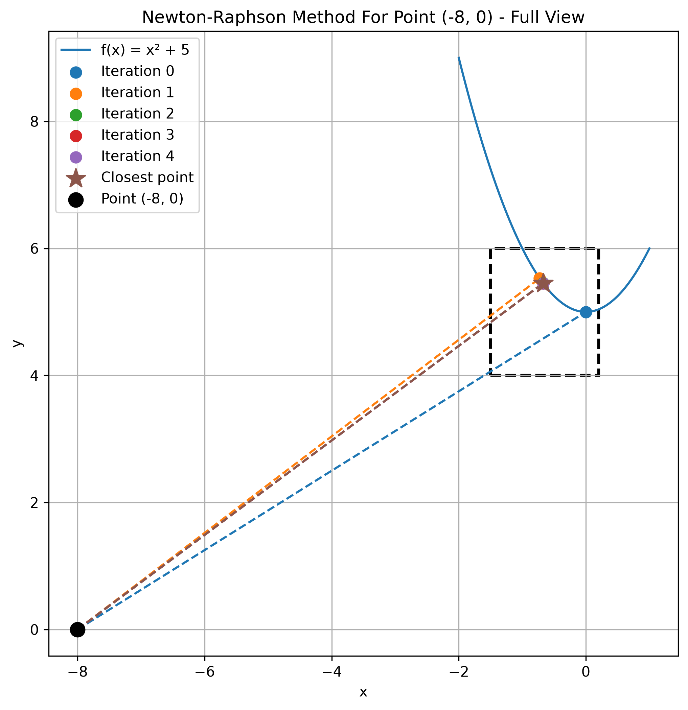
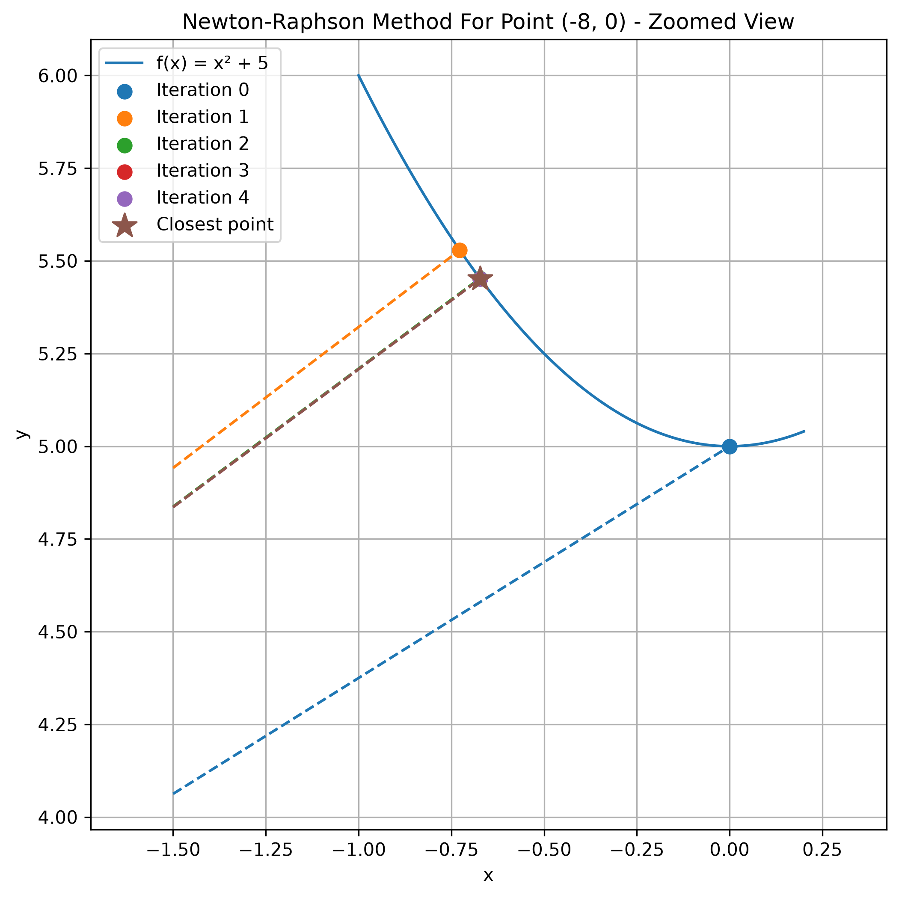
Explore other polynomial functions
Using the Newton-Raphson method, we applied it to other polynomial functions, such as cubic functions.
Given the polynomial \(f(x) = 2x^3 + x^2 - 3x +7\), \(f'(x) = 6x^2 + 2x - 3\), and \(f''(x) = 12x + 2\), and the point \((-1, 5)\), we get the following iterations:
| Iteration | \(x\) |
|---|---|
| 0 | 0.0000000 |
| 1 | 0.3571429 |
| 2 | 0.3939311 |
| 3 | 0.3948949 |
| 4 | 0.3948955 |
| 5 | 0.3948955 |
Notice that the method converges to \(x \approx 0.3949\), with \(f(0.3949) \approx 6.0944\).
Therefore, the closest point on the curve is approximately \((0.3949, 6.0944)\), and the shortest distance from \((-1,5)\) to the curve is approximately \(1.7730\).
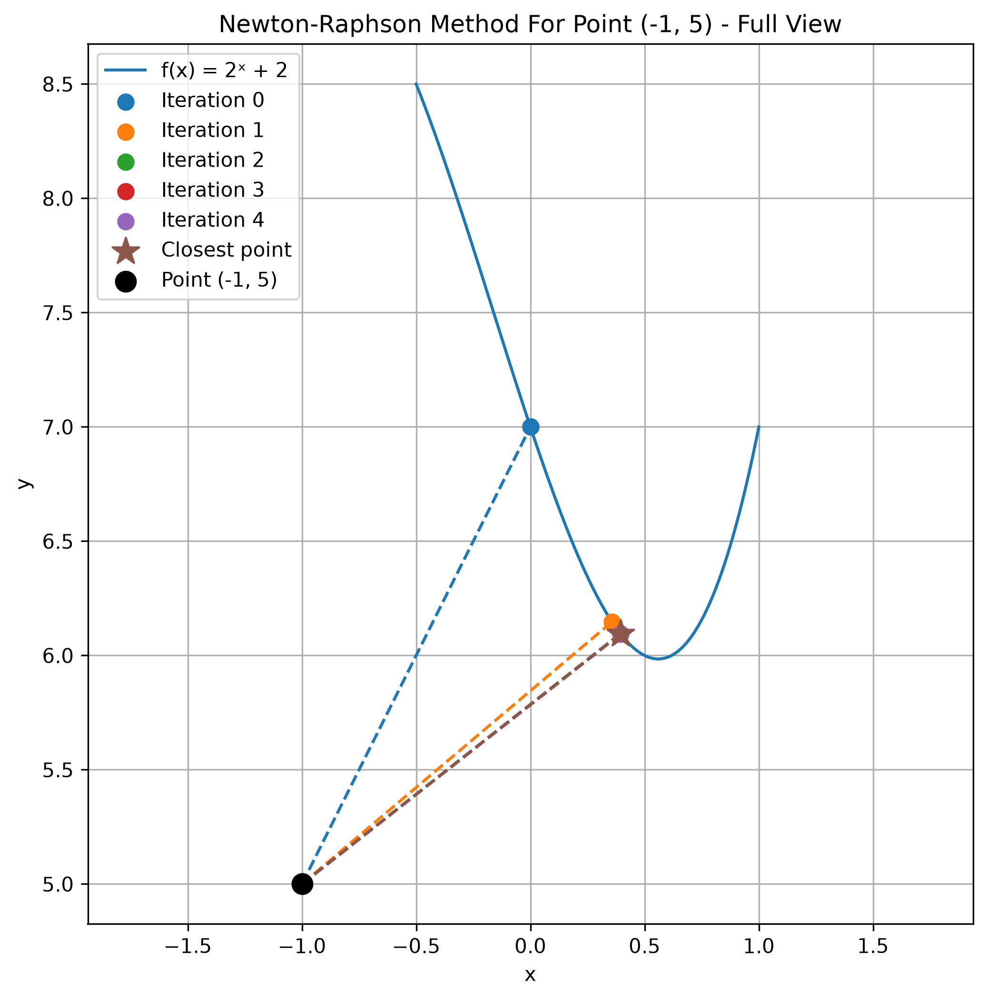
Explore non-polynomial functions
Using the Newton-Raphson method, we applied it to non-polynomial functions, such as exponential functions.
Given \(f(x) = 2^x + 2\), \(f'(x) = 2^x \ln(2)\), and \(f''(x) = 2^x(\ln(2))^2\), and the point \((2,3)\), we can apply the Newton-Raphson method and get the following iterations:
| Iteration | \(x\) |
|---|---|
| 0 | 0.0000000 |
| 1 | 1.3509378 |
| 2 | 1.0036735 |
| 3 | 0.9009555 |
| 4 | 0.8941453 |
| 5 | 0.8941181 |
| 6 | 0.8941181 |
Notice that the method converges to \(x \approx 0.8941\), with \(f(0.8941) \approx 3.8585\).
Therefore, the closest point on the curve is approximately \((0.8941, 3.8585)\), and the shortest distance from \((2,3)\) to the curve is approximately \(1.4000\).
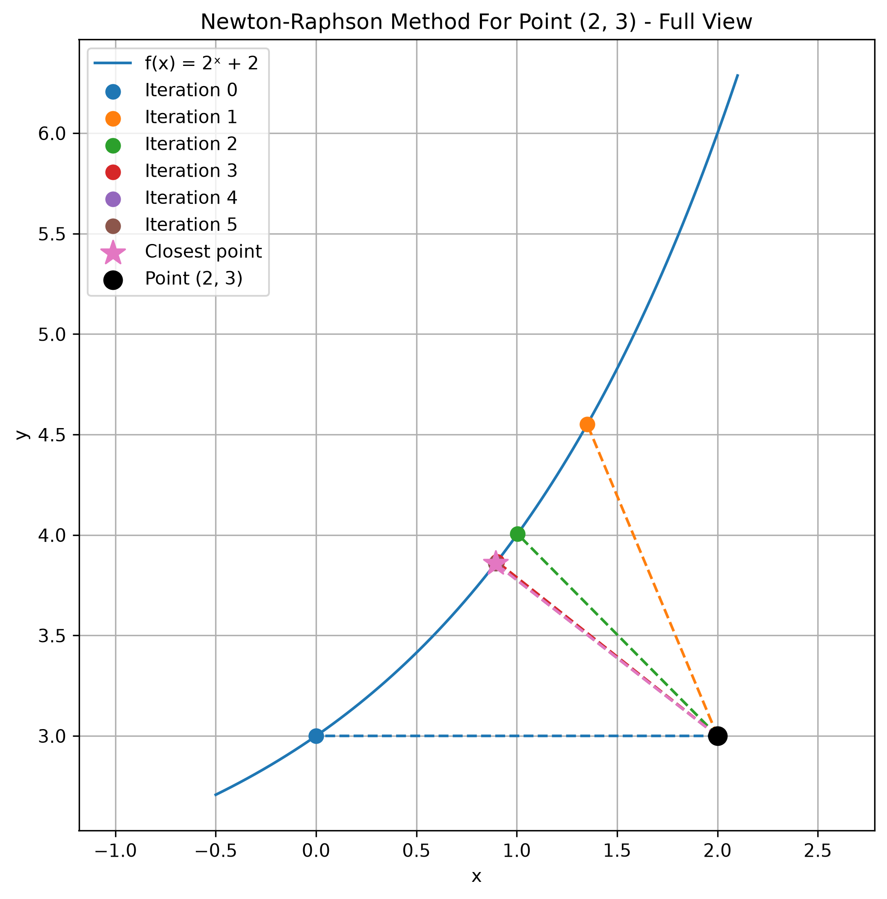
Summary of Results
The Newton-Raphson method successfully converged for the given polynomial function, a higher-order polynomial function, and a non-polynomial function, demonstrating that the method can be applied to different types of functions.
Golden Section Search
We use the Golden Section Search method when we don't know the derivatives of \(f(x)\) or when the derivatives are difficult to calculate. For this method, we only need an estimate of the interval that contains the minimum and a tolerance level to determine when to stop iterating.
Given the function \(f(x) = x^2 + 5\), we want to find the minimum of the squared distance function \(D(x)\).
We start with an initial interval \([a,b]\). At each iteration, we calculate two points inside the interval using the golden ratio. We have:
\[ \phi = \frac{1+\sqrt{5}}{2} \]
and
\[ \text{resphi} = 2-\phi. \]
Thus, the two points are
\[ x_1 = a+\text{resphi}(b-a) \]
\[ x_2 = b-\text{resphi}(b-a). \]
Then, if the squared distances \(D(x_1) < D(x_2)\), we move the right endpoint to \(x_2\). Otherwise, we move the left endpoint to \(x_1\). We continue this process until the length of the interval is smaller than the tolerance \(1\times10^{-7}\). Finally, we use the midpoint of the remaining interval as our estimate for the closest point on the curve.
By hand: Point \((0,0)\)
We pick the initial interval \([-5,5]\). Using the equations above, we calculate the two points and compare their squared distances at each iteration. The iterations are as follows:
| Iteration | a | x₁ | x₂ | b | d²(x₁) | d²(x₂) |
|---|---|---|---|---|---|---|
| 1 | -5.000000 | -1.180340 | 1.180340 | 5.000000 | 42.266237 | 42.266237 |
| 2 | -1.180340 | 1.180340 | 2.639320 | 5.000000 | 42.266237 | 150.151436 |
| 3 | -1.180340 | 0.278640 | 1.180340 | 2.639320 | 25.860074 | 42.266237 |
| 4 | -1.180340 | -0.278640 | 0.278640 | 1.180340 | 25.860074 | 25.860074 |
| 5 | -0.278640 | 0.278640 | 0.623059 | 1.180340 | 25.860074 | 29.420929 |
| 6 | -0.278640 | 0.065778 | 0.278640 | 0.623059 | 25.047613 | 25.860074 |
| 7 | -0.278640 | -0.065778 | 0.065778 | 0.278640 | 25.047613 | 25.047613 |
Looking at the iterations, the interval \((a, b)\) is converging to \(0\). Thus, we have the closest point \((0, f(0)) = (0, 5)\) and the distance \(d = 5\)
Golden Section Search - code
We implemented the Golden Section Search method in Python using the code provided, which can be viewed here. The only difference is that we added an array to store the interval changes from each iteration.
Example: Point \((-8, 0)\)
Using the Golden Section Search method, the intervals changed as follows:
| Iteration | \(a\) | \(b\) |
|---|---|---|
| 0 | -5.000000 | 5.000000 |
| 1 | -5.000000 | 1.180340 |
| 2 | -2.639320 | 1.180340 |
| 3 | -1.180340 | 1.180340 |
| 4 | -1.180340 | 0.278640 |
| 5 | -1.180340 | -0.278640 |
With more iterations, the interval converges to \(\approx -0.6721\). Thus, we have the closest point \((-0.6721, f(-0.6721)) = (-0.6721, 5.4517)\) and the distance \(d \approx 9.1334\)
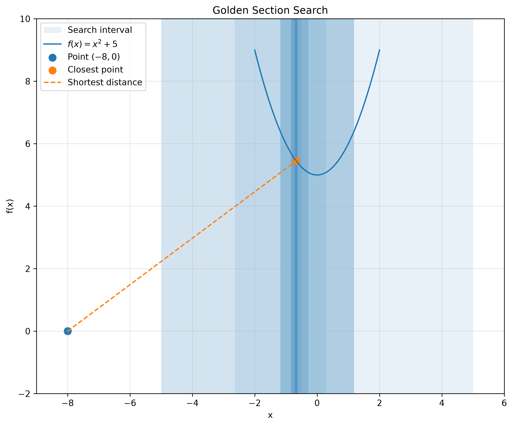
Exploring other polynomial functions
We will use the same cubic function as before and apply the Golden Section Search method.
Recall that we have \(f(x) = 2x^3 + x^2 - 3x + 7\) and the point \((-1,5)\), using the same initial interval \([-5, 5]\), we get the following iterations:
| Iteration | \(a\) | \(b\) |
|---|---|---|
| 0 | -5.000000 | 5.000000 |
| 1 | -5.000000 | 1.180340 |
| 2 | -2.639320 | 1.180340 |
| 3 | -1.180340 | 1.180340 |
| 4 | -0.278640 | 1.180340 |
| 5 | -0.278640 | 0.623059 |
With more iterations, the interval converges to \(\approx 0.3948955\). Thus, we have the closest point \((0.3948955, f(0.3948955)) = (0.3948955, 6.0944)\) and the distance \(d \approx 1.7730\).
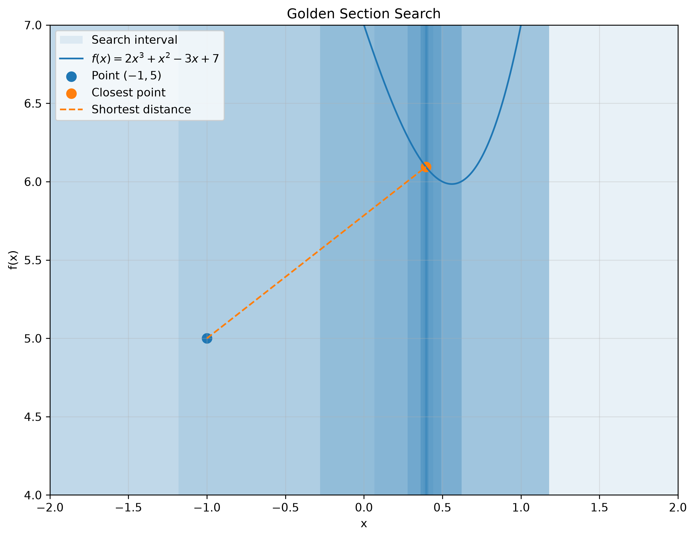
Explore non-polynomial functions
We will use the same exponential function as before and apply the Golden Section Search method.
Recall that we have \(f(x) = 2^x + 2\) and the point \((2, 3)\), using the same initial interval \([-5, 5]\), we get the following iterations:
| Iteration | \(a\) | \(b\) |
|---|---|---|
| 0 | -5.000000 | 5.000000 |
| 1 | -1.180340 | 5.000000 |
| 2 | -1.180340 | 2.639320 |
| 3 | 0.278640 | 2.639320 |
| 4 | 0.278640 | 1.737621 |
| 5 | 0.278640 | 1.180340 |
With more iterations, the interval converges to \(\approx 0.8941181\). Thus, we have the closest point \((0.8941181, f(0.8941181)) = (0.8941181, 3.8585)\) and the distance \(d \approx 1.4000\).
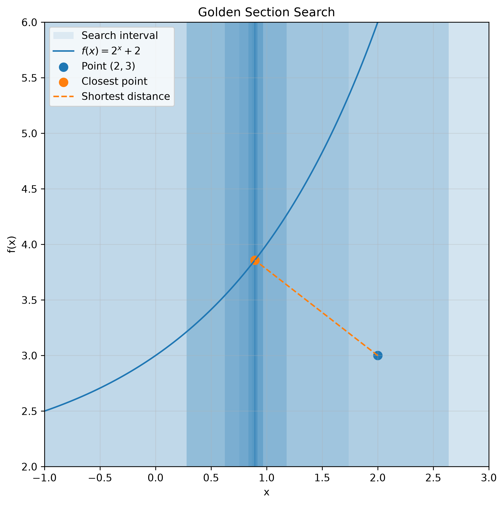
Summary of Results
The Golden Section Search successfully found the shortest distance from the given point to the parabola. We also demonstrated that the same numerical approach can be applied to other functions, including nonpolynomial functions.
Part 2: Fitting to an equation
Analytical method
Fit to line
Given the points \((0, 0.5), (2, 3.5), (1, 1.5), (3, 7.5)\), we want to fit them to a line \(y = c_0 + c_1x\). For each point \((x_i, y_i)\), we have the squared error \([y_i-(c_0+c_1x_i)]^2\). Thus, we want to minimize the following error:
\(E(c_0, c_1)=\sum_{i=1}^{n} (y_i-c_0-c_1x_i)^2\)
Subbing in the points, we have
\(E(c_0,c_1) = (0.5-c_0)^2 + (3.5-c_0-2c_1)^2 + (1.5-c_0-c_1)^2 + (7.5-c_0-3c_1)^2\)
Taking the partial derivatives and setting them equal to zero, we have
\( \begin{aligned} \frac{\partial E}{\partial c_0} &= -2(0.5-c_0)\\ &-2(3.5-c_0-2c_1)\\ &-2(1.5-c_0-c_1)\\ &-2(7.5-c_0-3c_1) = 0\end{aligned} \)
\( \begin{aligned} \frac{\partial E}{\partial c_1} &=-4(3.5-c_0-2c_1)\\ &-2(1.5-c_0-c_1)\\ &-6(7.5-c_0-3c_1) = 0 \end{aligned} \)
Simplifying, we get the following system of linear equations:
\( \begin{aligned} 4c_0+6c_1 &= 13\\ 6c_0+14c_1 &= 31 \end{aligned} \)
We can write this system in matrix form as
\( \begin{bmatrix} 4 & 6\\ 6 & 14 \end{bmatrix} \begin{bmatrix} c_0\\ c_1 \end{bmatrix} = \begin{bmatrix} 13\\ 31 \end{bmatrix} \)
Solving this system gives
\( c_0=-0.2,\qquad c_1=2.3 \)
Therefore, we have the line \(y=-0.2+2.3x\)
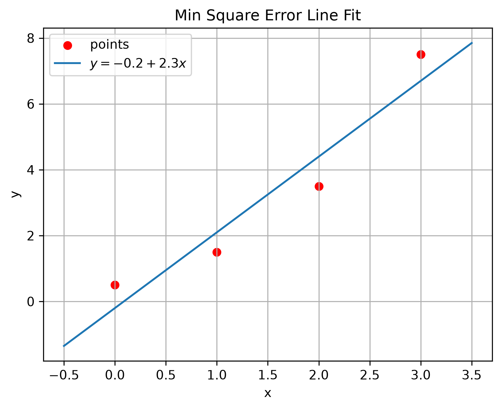
Fit to quadratic
Given the points \((0, 0.5), (2, 3.5), (1, 1.5), (3, 7.5)\), we want to fit them to a quadratic \(y = c_0 + c_1x + c_2x^2\). For each point \((x_i,y_i)\), we have the squared error \([y_i - (c_0 + c_1x_i + c_2x_i^2)]^2\). Thus, we minimize the following error:
\( E(c_0,c_1,c_2) = \sum_{i=1}^{n}(y_i-c_0-c_1x_i-c_2x_i^2)^2 \)
Subbing in the points, we have
\( \begin{aligned} E(c_0,c_1,c_2) = &(0.5-c_0)^2 \\ &+(3.5-c_0-2c_1-4c_2)^2 \\ &+(1.5-c_0-c_1-c_2)^2 \\ &+(7.5-c_0-3c_1-9c_2)^2 \end{aligned}\)
Taking the partial derivatives and setting them equal to zero, we have
\( \begin{aligned} \frac{\partial E}{\partial c_0} = &-2(0.5-c_0)\\ &-2(3.5-c_0-2c_1-4c_2)\\ &-2(1.5-c_0-c_1-c_2)\\ &-2(7.5-c_0-3c_1-9c_2)=0 \end{aligned} \)
\( \begin{aligned} \frac{\partial E}{\partial c_1} = &-4(3.5-c_0-2c_1-4c_2)\\ &-2(1.5-c_0-c_1-c_2)\\ &-6(7.5-c_0-3c_1-9c_2)=0 \end{aligned} \)
\( \begin{aligned} \frac{\partial E}{\partial c_2} = &-8(3.5-c_0-2c_1-4c_2)\\ &-2(1.5-c_0-c_1-c_2)\\ &-18(7.5-c_0-3c_1-9c_2)=0 \end{aligned} \)
Simplifying, we get the following system of linear equations:
\( \begin{aligned} 4c_0+6c_1+14c_2 &= 13\\ 6c_0+14c_1+36c_2 &= 31\\ 14c_0+36c_1+98c_2 &= 83 \end{aligned} \)
We can write this system in matrix form as
\( \begin{bmatrix} 4 & 6 & 14\\ 6 & 14 & 36\\ 14 & 36 & 98 \end{bmatrix} \begin{bmatrix} c_0\\ c_1\\ c_2 \end{bmatrix} = \begin{bmatrix} 13\\ 31\\ 83 \end{bmatrix} \)
Solving this system gives
\( c_0=0.55,\qquad c_1=0.05,\qquad c_2=0.75 \)
Therefore, we have the quadratic \( y=0.55+0.05x+0.75x^2 \)
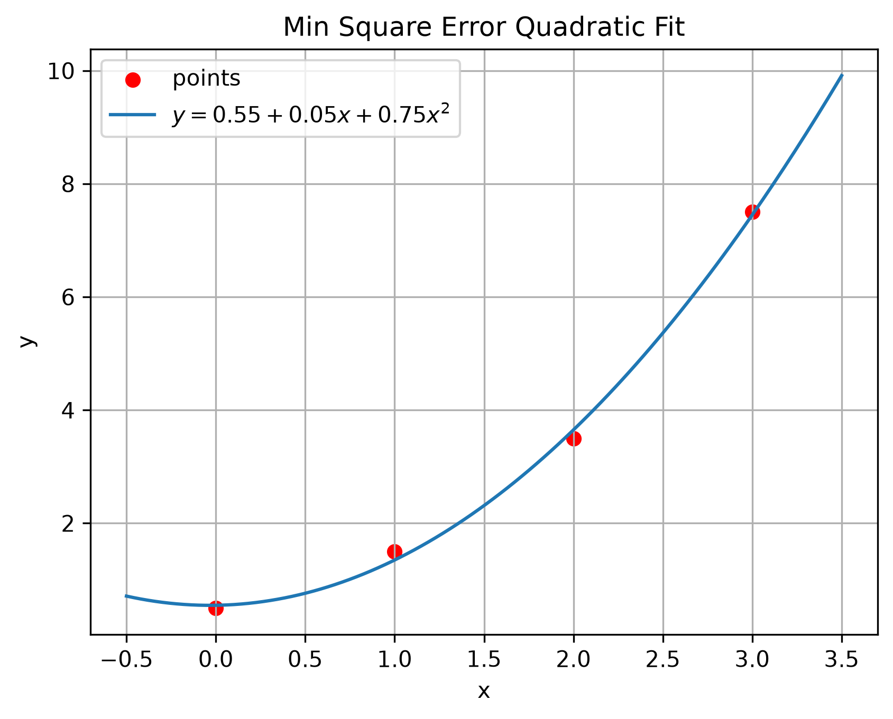
Newton-Raphson multivariate
Fit to line
Given the points $(0, 0.5), (1, 1.5), (2, 3.5), (3, 7.5)$, we want to fit them to a line $y = c_0 + c_1 x$ using the multidimensional Newton-Raphson method to minimize the squared error $E(c_0, c_1) = \sum_{i=1}^{n}(y_i - c_0 - c_1 x_i)^2$.
Substituting the points into the squared error gives:
$E(c_0, c_1) = (0.5 - c_0)^2 + (1.5 - c_0 - c_1)^2 + (3.5 - c_0 - 2c_1)^2 + (7.5 - c_0 - 3c_1)^2$
The first derivative $\nabla E$:
$\dfrac{\partial E}{\partial c_0} = 8c_0 + 12c_1 - 26$
$\dfrac{\partial E}{\partial c_1} = 12c_0 + 28c_1 - 62$
The second derivative gives:
$\dfrac{\partial^2 E}{\partial c_0^2} = 8, \quad$ $\dfrac{\partial^2 E}{\partial c_0\,\partial c_1} = 12, \quad$ $\dfrac{\partial^2 E}{\partial c_1\,\partial c_0} = 12, \quad$ $\dfrac{\partial^2 E}{\partial c_1^2} = 28$
Thus the Hessian $\mathbf{J} = \begin{bmatrix} 8 & 12 \\ 12 & 28 \end{bmatrix}$ and its inverse is $\mathbf{J}^{-1} = \begin{bmatrix} 0.35 & -0.15 \\ -0.15 & 0.1 \end{bmatrix}$
For Newton-Raphson method, we initialize with $c_0 = (0, 0)$ and $\delta = 0.5$. Then, we iterate with $c_{n+1} = c_n - \delta \mathbf{J}^{-1} \nabla E(c_n)$ with the following iterations:
| $n$ | $c_0$ | $c_1$ | $\nabla E(\mathbf{c}_n)$ |
|---|---|---|---|
| 0 | 0 | 0 | $(-26,\ -62)$ |
| 1 | -0.1 | 1.15 | $(-13,\ -31)$ |
| 2 | -0.15 | 1.725 | $(-6.5,\ -15.5)$ |
| 3 | -0.175 | 2.0125 | $(-3.25,\ -7.75)$ |
| 4 | -0.1875 | 2.15625 | $(-1.625,\ -3.875)$ |
| 5 | -0.19375 | 2.228125 | $(-0.8125,\ -1.9375)$ |
The iterations approach $\mathbf{c}^* = (-0.2,\ 2.3)$ and the fitted line is $y = -0.2 + 2.3x$.
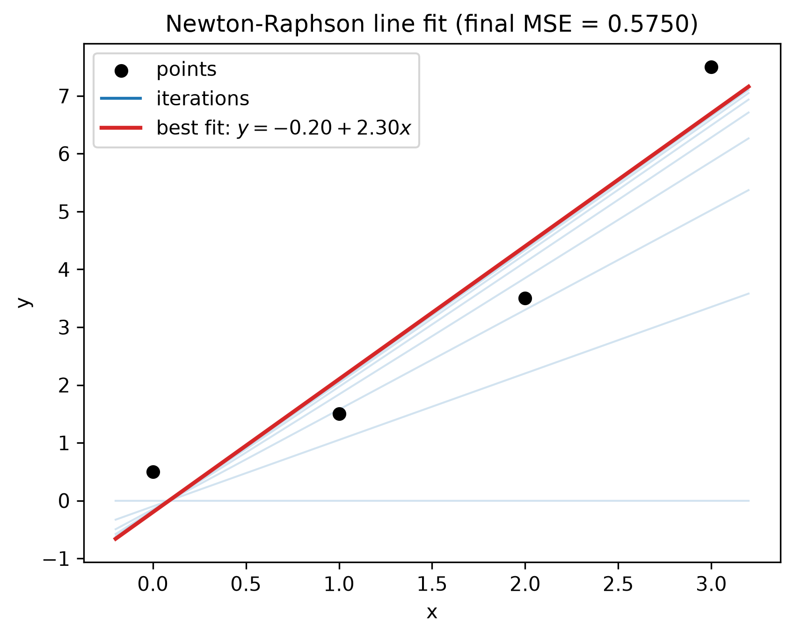
Fit to quadratic
Given the points $(0, 0.5), (1, 1.5), (2, 3.5), (3, 7.5)$, we want to fit them to a quadratic $y = c_0 + c_1 x + c_2 x^2$ using the multidimensional Newton-Raphson method to minimize the squared error $E(c_0, c_1, c_2) = \sum_{i=1}^{4}(y_i - c_0 - c_1 x_i - c_2 x_i^2)^2$.
Substituting the points into the squared error gives:
$E(c_0, c_1, c_2) = (0.5 - c_0)^2 + (1.5 - c_0 - c_1 - c_2)^2 + (3.5 - c_0 - 2c_1 - 4c_2)^2 + (7.5 - c_0 - 3c_1 - 9c_2)^2$
The first derivative $\nabla E$:
$\dfrac{\partial E}{\partial c_0} = 8c_0 + 12c_1 + 28c_2 - 26$
$\dfrac{\partial E}{\partial c_1} = 12c_0 + 28c_1 + 72c_2 - 62$
$\dfrac{\partial E}{\partial c_2} = 28c_0 + 72c_1 + 196c_2 - 166$
The second derivative gives (the mixed partials are symmetric):
$\dfrac{\partial^2 E}{\partial c_0^2} = 8, \quad$ $\dfrac{\partial^2 E}{\partial c_0\,\partial c_1} = 12, \quad$ $\dfrac{\partial^2 E}{\partial c_0\,\partial c_2} = 28$
$\dfrac{\partial^2 E}{\partial c_1^2} = 28, \quad$ $\dfrac{\partial^2 E}{\partial c_1\,\partial c_2} = 72, \quad$ $\dfrac{\partial^2 E}{\partial c_2^2} = 196$
Thus the Hessian $\mathbf{J} = \begin{bmatrix} 8 & 12 & 28 \\ 12 & 28 & 72 \\ 28 & 72 & 196 \end{bmatrix}$ and its inverse is $\mathbf{J}^{-1} = \begin{bmatrix} \frac{19}{40} & -\frac{21}{40} & \frac{1}{8} \\ -\frac{21}{40} & \frac{49}{40} & -\frac{3}{8} \\ \frac{1}{8} & -\frac{3}{8} & \frac{1}{8} \end{bmatrix}$
For Newton-Raphson method, we initialize with $(c_0, c_1, c_2) = (0, 0, 0)$ and $\delta = 0.5$. Then, we iterate with $\mathbf{c}_{n+1} = \mathbf{c}_n - \delta\,\mathbf{J}^{-1}\nabla E(\mathbf{c}_n)$ with the following iterations:
| $n$ | $c_0$ | $c_1$ | $c_2$ | $\nabla E(\mathbf{c}_n)$ |
|---|---|---|---|---|
| 0 | 0 | 0 | 0 | $(-26,\ -62,\ -166)$ |
| 1 | 0.275 | 0.025 | 0.375 | $(-13,\ -31,\ -83)$ |
| 2 | 0.4125 | 0.0375 | 0.5625 | $(-6.5,\ -15.5,\ -41.5)$ |
| 3 | 0.48125 | 0.04375 | 0.65625 | $(-3.25,\ -7.75,\ -20.75)$ |
| 4 | 0.515625 | 0.046875 | 0.703125 | $(-1.625,\ -3.875,\ -10.375)$ |
| 5 | 0.5328125 | 0.0484375 | 0.7265625 | $(-0.8125,\ -1.9375,\ -5.1875)$ |
With more iterations, it approaches $\mathbf{c}^* = (0.55,\ 0.05,\ 0.75)$ and the fitted quadratic is $y = 0.55 + 0.05x + 0.75x^2$.
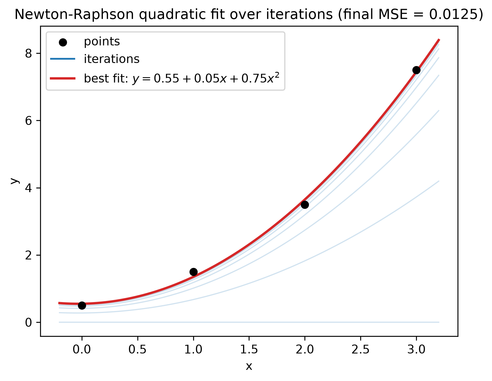